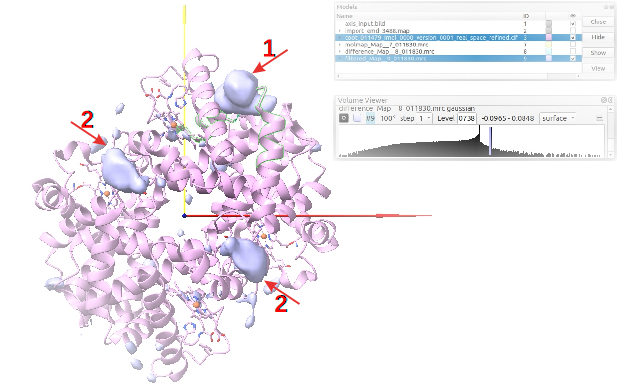
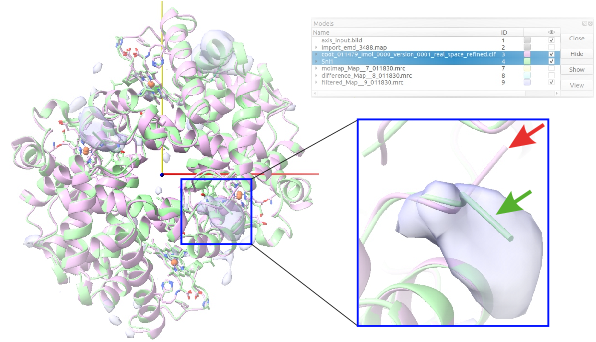

14. The whole macromolecule¶
To regenerate the whole human metHgb macromolecule, we are going to follow basically the schema shown in Fig. 13.1. Starting from the symmetric unit, ChimeraX operate protocol allows to generate the whole molecule by symmetry. As in the previous step, validation programs drive to selection of the best model of the whole molecule after one or several rounds of assessment - refinement -assessment. A final validation step will be accomplished with ChimeraX map subtraction protocol to assess the volume density occupancy of the new macromolecule generated.
- Protocol chimerax-operate to generate the whole molecule of human Hgb:Following previous instructions, open ChimeraX operate protocol (Fig. 12.7 (1)), load the selected atomic structure model of metHgb asymmetric unit (2), and execute the protocol (3). ChimeraX graphics interface will show you the model of metHgb asymmetric unit. Considering the C2 symmetry of the whole molecule, write in ChimeraX command line to re-generate the whole molecule:
sym #3 C2 copies true
Although the whole structure can be saved by writing in ChimeraX command line scipionwrite #4 prefix whole_model_, in order to have only one model and not a group of two models, we will write in command line:save /tmp/chains_C_D.cif format mmcif models #4.2 open /tmp/chains_C_D.cif
Old ChimeraX versions:setattr #5/A c chain_id C setattr #5/A r chain_id C setattr #5/B c chain_id D setattr #5/B r chain_id D
New version of ChimeraX:scipioncombine #3,5 scipionwrite #6 prefix whole_model_
Remark that we have changed the ids of symmetric chains A and B by C and D, respectively.NOTE:In this small example selected for modeling it doesn’t matter if we model the map asymmetric unit or the whole molecule. In real life, however, to model the whole molecule doesn’t make sense because of its huge size. In that case, we will limit our modeling to the map asymmetric unit. The right modeling of this part of the molecule will require to add the adjacent asymmetric units in order to perform the appropriate modeling of the overlapping areas, avoiding steric classes in the reconstruction by symmetry of the whole molecule. In that case, the command lines would be:- To generate the symmetry copies:
sym #3 C2 copies true
- To remove in the new model #4 the symmetry copies with centers within a certain range of distance d of the center of the molecule input model:
delete #4 & #3 #>d
At this point we will continue with the refinement process of this asymmetric unit plus neighbors. The validation will focus only on the asymmetric unit, which will be recovered by removing the remaining adjacent asymmetric units. This cleaning or removing of the neighbor units can be performed with the protocol ChimeraX operate each time we would like to validate the structure. - Protocols to refine the new combined structure generated:As we said in the previous chapter regarding the building of the asymmetric unit, refinements should cover specially the overlapping areas, in this case between the two asymmetric units. Help yourself with Coot tools of Validate in the main menu, as well as the visualization tools of PHENIX real space refine protocol.
- Validation protocols to select the best model of the whole human Hgb:EMRinger and Validation CryoEM (MolProbity) statistics have to be computed for the new model of the whole human metHgb obtained by using ChimeraX operate protocol (see results Table 9 in Appendix Solutions; Question12). Because of high values of CC(mask) and EMRinger score, as well as acceptable MolProbity statistics, model generated by ChimeraX operate protocol is selected as model of the whole human metHgb. Additional refinement steps with PHENIX real space refine and Refmac do not seem to improve the result significantly. In this case, the RMSD value of the selected atomic structure model, regarding the published structure, yields an intermediate value between the best and the worst one.
- Protocol chimerax-map subtraction to assess volume density occupancy:We perform this analysis in order to identify parts of the density map that were not modeled previously, maybe unknown parts of the complex, although areas where the model doesn’t fit the map can be also identified. Sometimes the density level or the resolution in these areas differ from the rest of the map and commonly are more blurry, which makes them much more difficult to identify and trace. Ideally, we would like to remove the map density associated to the already traced atomic structure to facilitate the modeling of the remnant density. Obviously, there are some limitations in this process because the structure-derived map might not be absolutely identical to the reconstructed map. As one possible aproximation, we will run a protocol based on ChimeraX (see Appendix CHIMERAX Map subtraction with use cases) to subtract the modeled part of the map from the whole map.
First, open ChimeraX map subtraction protocol (Fig. 14.2 (1)), load both the initial map obtained from the reconstruction process (2) and its resolution. Although in this case we are going to consider the nominal map resolution, in real life you should test different resolution values among which the half value of the resolution obtained by FSC is recommended. Include also the refined atomic structure model of the whole human metHgb (3). As a control of the subtraction process we are going to remove 7 residues of the chain A. With this aim, use the two wizards on the right (4) to select that chain and residues located between positions 22 and 28, both included. Since we are interested in observing differences in the whole map, the default option No will be maintained regarding the selection of a map fraction around the atomic structure (5). Then, execute the protocol (6).
ChimeraX graphics window will open and the commands driving the subtraction process will be applied. The Fig. 14.3 shows in blue the map resulting from subtracting the model-derived map from the starting map EMD-3488 after applying a Gaussian filter. Three main map bodies can be observed moving the density threshold of this map (model #9 in the Models panel). The red arrow number 1 points to the control map derived from removing 7 residues of the chain A of the atomic structure. The other two red arrows (number 2) point to two unexpected remnant densities.
Fig. 14.3 Filtered subtraction map (blue bodies) and refined atomic structure (pink) of the whole human Hgb.¶
The two additional bodies of density should not appear with an appropriate modeling of the human Hgb showing acceptable validation scores. However, in this final model of the whole human Hgb we didn’t refine on purpose the C-terminal ends of chain A and its symmetric chain C. The ARG residues don’t fit to the map density and the remnant densities identified in the subtraction protocol correspond to the C-terminal ends of chains A and C. A fair tracing of those parts of the molecule would avoid remnant densities others than the control. To check the right tracing of the human Hgb we have overlapped the above mentioned published atomic structure of the human Hgb (PDB ID 5NI1), in green in Fig. 14.4, and our final model, depicted in pink. The zoom in details the C-terminal end of our model (red arrow) and the published one (green arrow), which perfectly fits the body of density.
Fig. 14.4 Overlapping structures of the models built (pink) and published (green) of the whole human Hgb. Zoom in to detail the C-terminal end of the chain C.¶
As a conclusion, if you do not have additional densities with the example of this tutorial, except the control one, you’d have performed a good modeling and you could use your atomic structure to perform other types of analyses and to publish it. Otherwise, you should still refine your model.
{kind=link}
{kind=link}
{kind=link}
{kind=link}